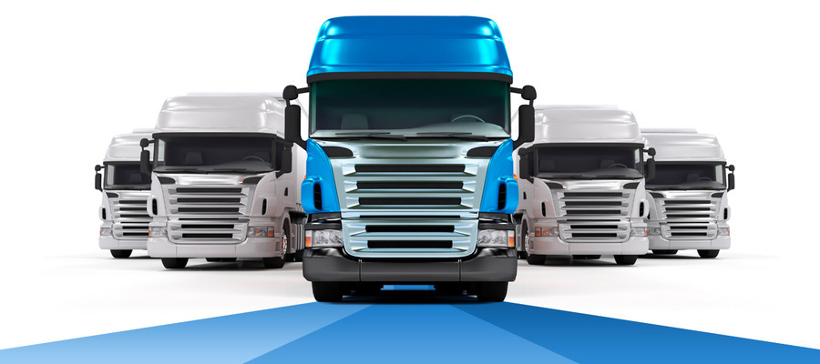
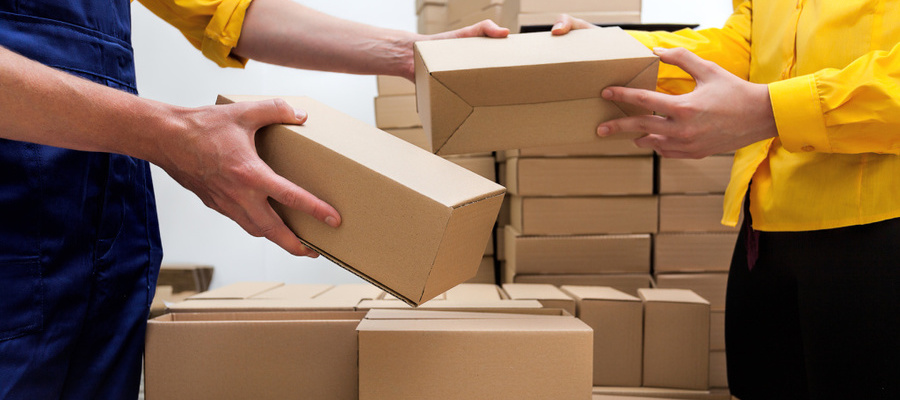
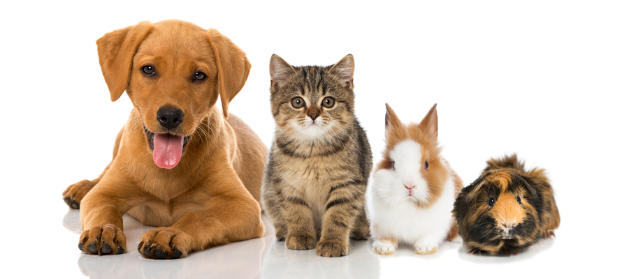

Nemzetközi szállítás
Nem tudod hogyan juttasd el a csomagod külfödre vagy szállíttass külföldről a lehető legjobb áron? Ne csüggedj, mert ezen az oldalon számodra is létezik megoldás! A TransMate-nél a legkedvezőbb árakon küldheted el csomagjaidat Európa több országába! Ne habozz, válassz minket!
Csomagszállítás
Megbízható partnerként már 2016 óta szállítunk versenyképes áron. Szerződött partnereinknek vállaljuk, hogy csomagjaikat a következő munkanapon kiszállítjuk az ország teljes területén. Előre megadjuk címzettjeik részére azt a 60 perces időkaput, amikor futárunk várhatóan érkezni fog. Kiegészítő szolgáltatásainkkal, informatikai megoldásaink segítségével rugalmasan alkalmazkodunk vállalkozása és ügyfelei igényeihez.
Kisállatszállítás
Mi magunk is nagy állatbarátok vagyunk, kutyusainkat, cicáinkat családtagokként kezeljük, (nem is tudnánk másként ☺). Állatmentö alapítványoknak adományozunk és gyakran ideiglenes befogadókként segédkezünk, hogy lehetőség szerint legalább ennyivel szebbé tegyük egy-egy szőrös kisangyal életét. Már a cégünk megalakulása előtt is sok tapasztalatot szereztünk kisállat szállítással, főleg balesetet szenvedett, sérült kutyusokkal, cicákkal.